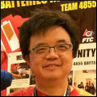
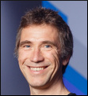
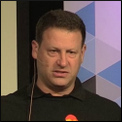
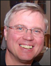

About JCP
Get Involved
Community Resources
Community News
FAQ
Contact Us
About JCP
Get Involved
Community Resources
Community News
FAQ
Contact Us

|
|
Java Community Process: Executive Committee Elections Nominees for 2018

|
The 2018 Fall Executive Committee Elections have started. This year, there are 8 Ratified, 3 Elected and 1 Associate Seats open for election.
We will host the Meet the JCP EC Candidates BOF (Session ID: BOF4998) at Oracle Code One San Francisco on
Tuesday, 23 October at 7:30 PM in Room 2008 in Moscone West.
We will also host the Meet the JCP EC Candidates conference call on Thursday, 1 November at 10 AM PDT. Join us to listen to the
qualification statements from the EC nominees.
Meet the JCP EC Candidates conference call
Thursday, 1 November
10 AM PDT
JOIN WEBEX MEETING
Join WebEx
Meeting Number: 817 591 700
Meeting Password: 123456
JOIN BY PHONE
Primary Dial in Number: 1-8666824770 (US)
Alternate Dial in Number: 1-4087744073 (US)
Show global numbers
Conference Code: 138 683 3
Conference Password: 123456
Please refer to the Java Community Process EC Elections page for more information on the Executive Committee Elections.
Please refer to the Executive Committee Information page for more information on the current Executive Committee.
What follows are the qualification statements provided by the candidates for the Executive Committee, along with a
brief biography of the person who would serve as the Member's representative on the Executive Committee if elected,
and a position statement when one was provided.
| 2018 EXECUTIVE COMMITTEE RATIFIED SEAT CANDIDATES |
Alibaba
|
We customize OpenJDK to meet the needs of rapidly growing business. Close to a million JVM instances are running,
serving Alibaba's full spectrum of services, including world's largest online e-commerce, financial and logistics
marketplaces. Alibaba will continue to innovate Java infrastructure technology based on OpenJDK.
Alibaba Position Statement (.pdf file)
|

Kingsum Chow
|
Kingsum Chow is the chief scientist of system software hardware co-optimization. He has over 15 years of optimizing
Java performance in collaboration with Appeal, IBM, BEA, Sun and Oracle JVM teams while working at Intel. In 2016,
he joined Alibaba to improve Java performance in the data center. Kingsum has been issued more than 20 patents.
He also has delivered more than 90 papers and presentations. Kingsum appeared four times in JavaOne keynotes.
|
| | |
Goldman Sachs
|
Goldman Sachs is a financial services firm built on its global technology enterprise. Development at the firm is
overwhelmingly Java-based, with more than 130 million lines of Java code and more than 3,000 Java developers;
this code is used by the majority of the firm's end-users.
The firm custom-builds most of its software, and its historical reliance on open source components, as well as its
extensive multi-vendor relationships, give it deep experience with problems of interoperability and systems/software
integration. As a major consumer of Java, Goldman Sachs is thus deeply invested in its future, and seeks to contribute to
Java standards. The firm remains committed to the continued evolution of Java, both through the innovation of the broad
Java community, and the ongoing process of standardization.
The firm participates on both individual and corporate levels in a broad range of industry forums and leadership groups,
as well as technical conferences including: JavaOne, JavaDay Tokyo, EclipseCon North America & Europe, JVM Language Summit,
QCon New York, QCon Beijing, NY Java SIG, Japan Java User Group CCC, London Java Community, Hong Kong Java User Group, GIDS;
contributions to various open source projects, including OpenJDK, Zookeeper, Spark. Goldman Sachs is an active participant in
the JCP EC and has participated in several JSR Expert Groups, as well as hosting Java User Group meet ups in London and New York.
Goldman Sachs VP, Nikhil Nanivadekar was recently recognized by the Java community as a 2018 Java Champion. The firm has open
sourced the Eclipse Collections library (formerly GS Collections) and several other Java frameworks.
As a member of the JCP Executive Committee, our representative, Jackie Haynes, would put particular focus on ways to advance
the role of Java in the enterprise, and on continuing and furthering the ability for any vendor or open source community to
participate in the development of Java through the JCP.
|
Jackie Haynes
|
Jackie Haynes works in the Core Engineering group at Goldman Sachs and runs the architecture team for the firms trading
and risk platform. She has programmed in Java since 1999 and built a number of key systems at Goldman Sachs that run on
the JVM. This year she is presenting at the Oracle Code One conference on Truffle and Graal, and has previously presented
at other tech conferences. Jackie joined Goldman Sachs in 2006 was promoted to Technology Fellow in 2016 and
Managing Director in 2017.
|
| | |
JetBrains
|
Most well-known for IntelliJ IDEA, JetBrains aims to make development a more productive and enjoyable experience.
As a member of the Executive Committee, JetBrains brings multiple areas of expertise. We are
- developers that use Java extensively
- a producer of tools for developers, we understand the challenges of implementing new standards
- the creators of the JVM language Kotlin, we see the benefits of the JVM as a platform and understand its
impact is wider than just Java-the-language
- active advocates for the Java platform, we help developers to learn about and adopt new APIs and standards
JetBrains believes involvement in the community is fundamental to helping the Java platform to evolve and
before being on the JCP EC was involved in several Expert Groups, including JSR 305 (Annotations for Software
Defect Detection), JSR 334 (Project Coin) and JSR 335 (Lambda Expressions).
|
Trisha Gee
|
Trisha Gee is a Java Champion and the Java Developer Advocate for JetBrains, a role which is perfect for her
passion of evangelising Java after nearly 20 years of developing applications with it. Her goal is to help
developers to "level up" as the language evolves. She has written and presented on Java 8 and 9, helping developers
to understand how to use the new features and how to refactor to utilise the latest idioms, and now is helping developers
stay up to date with six-monthly releases.
Before representing JetBrains on the Executive Committee, Trisha was previously involved in the JCP EC via the London
Java Community, and helped to create the Adopt a JSR and Adopt OpenJDK initiatives.
|
| | |
MicroDoc
|
MicroDoc is technology oriented software development business with its headquarter in Munich Germany.
It holds a ratified seat in the JCP EC since 2014 and has decided to run for the next election period to
foster the development and growth of Java in the IoT eco system, where a variety of hardware architectures
and operating systems require flexible adoption of the Java technology, while maintaining adherence to the
Java standards must be guaranteed.
MicroDoc Position Statement (.pdf file)
|
Hendrik Hoefer
|
Hendrik Hoefer is co-founder and technical director of MicroDoc Computersysteme GmbH based in Munich Germany.
During his career Hendrik worked as developer, architect and project manager in embedded and enterprise projects.
Today Hendrik is in charge of the technical direction at MicroDoc and works with customers on next generation
telematics and cloud based products. His main interest is applying modern software engineering in embedded development.
|
| | |
SAP SE
|
SAP is the world's leading provider of business software helping companies of all sizes and industries run better.
A significant portion of SAP's customers run SAP solutions based on Java. SAP has participated in the JCP since 2001
and is also one of the biggest external OpenJDK contributors, currently leading the PowerPC/AIX and s390x
OpenJDK projects. SAP is committed to ensuring the continued success of the Java platform for our customers, our
partners, and the community at large.
|

Volker Simonis
|
Volker Simonis works on Java/JVM technologies for more than 10 years. He is an OpenJDK contributor from the very
beginning and helped SAP to engage in the OpenJDK project. He's the project lead of the OpenJDK PowerPC/AIX and
s390x porting projects, an OpenJDK reviewer and JCP Executive Committee representative for SAP. He also serves as a
member of the JCP JSR 379, 383, 384 and 386 (Java SE 9-12) Expert Groups.
|
| | |
Software AG
|
Software AG is a long standing active member of Java communities.
Founded in 1969, Software AG is a major java centric enterprise
software vendor with over 10,000 customers in more than 70
countries, with about 1 Billion Euros annual revenues.
The company is the second largest software vendor in Germany, the
fourth largest in Europe.
Software AG's unique product portfolio encompasses webMethods,
Apama, ARIS, Terracotta, Adabas, Cumulocity etc. business-lines. A
major Java centric middleware platform provider - solutions spanning
intelligent Business Operations, Cloud, BPMS, Integration, DB,
Mobile and IoT.
As a long-standing member of JCP and active member of many
expert groups and chair, we bring in the perspective of medium scale
vendor and a significant java technology provider & consumer.
We have been on the JCP-EC for the past fnew years. The
experience of the past two years has been very beneficial, though the
process had been slow sometimes, as should be expected in a real
standards body, especially when critical decisions are being made
and significant changes are being legislated.
Software AG is very much committed to keeping JCP open and
equally accessible to individuals and enterprises of all sizes, with RF
IP terms. We are delighted to find that the JCP next effort is in fact is
getting close to bringing us close to that openness. We have the
resources to support the activities of JCP and JCP EC. Thank you!
|
Prasad Yendluri
|
As Vice President Product Development at Software AG, Prasad Yendluri is responsible for standards involvement,
oversight and adoption, architecture and product strategy.
Prasad had been a long-standing member of JCP served as expert member of several JSRs, including JAXM, JAXB,
JAXR, JAX-RPC JBI and JCA. Software AG also co-chairs JSR-107.
He had also been actively involved in a number bodies, including W3C, OASIS, WS-I, OMG, OSGi, Eclipse Foundation,
CSCC etc. Active member and editor of several works including the WS- Policy, WS-Addressing, WSDL 2.0, WS-BPEL 2.0,
BPEL4People, BPMN 2.0, WS-I Basic Profiles and SCA.
He served on the WS-I board for 6 years, and later on the steering committee for WS-I member section in OASIS.
Also serves on the board for DMTF and OSGi. Additionallyserved on the Steering committee for AMQP member section in
OASIS and also on CSCC steering committee at OMG.
Co-author of several specifications, including CAMP, TOSCA, WS-MeX, WS-Discovery, SOAP/JMS, BPMN 2.0. Published
numerous technical articles in several Web services journals. Significant contributor to UDDI and lead architect and
co-author of the RosettaNet Implementation Frameworks. He is inventor and co-inventor with several granted patents and
patent applications in progress.
Prior to joining Software AG Prasad worked for companies such as Netscape, AOL, Siemens, Unisys, Amdahl in various senior
positions in software development and architecture. Prasad Yendluri holds a MS in Computer Science and a BS in
Electrical Engineering.
|
| | |
The Bank of New York Mellon
|
BNY Mellon Technology, with a $2.4 billion-and-growing budget and more than 13,000 technologists and developers globally,
provides critical technology infrastructure and applications to support the bank's role as a leading provider of
clearing, payments, custody, and asset management services to the global financial markets. Our technology plays a core
and significant role in the global financial markets, in addition to delivering secure, reliable, and innovative systems to our clients.
Our group of leading technologists and developers innovate solutions that support BNY Mellon's role as one of the
largest investments company that oversees $33.6 trillion in assets under custody as of June 30, 2018. With over 100 million
lines of Java code under management, the Java ecosystem is increasingly a critical part of the technology stack across the
BNY Mellon enterprise. We recently open sourced our first project, BNY Mellon Code Katas, which are a set of educational
exercises that enable Java engineers to continually develop and refine their skills as they aim to keep pace with the new
six-month Java release train.
As a member of the Java Community Process (JCP) Executive Committee (EC), our representative, Don Raab, Managing Director
and Instructional Coach on the Shared Services Team will focus on helping Java and BNY Mellon evolve their strategic
investment in the enterprise. He is the creator of the Eclipse Collections Java Library and was selected as a 2018
Java Champion. Prior to joining BNY Mellon, he was an active and influential representative on the JCP EC when he was a
Technology Fellow at Goldman Sachs.
The Bank of New York Mellon Position Statement (.pdf file)
|
Donald Raab
|
Donald (Don) Raab is a Managing Director and Instructional Coach on the Shared Services Team, BNY Mellon. Don has more
than 17 years' experience as a Software Engineer in the Financial Services industry. He started programming with Java in 1997.
Don is a member of the JSR 335 Expert Group (Libraries) and is also the creator of the Eclipse Collections Java Library that
was originally open sourced as GS Collections in 2012 and migrated to the Eclipse Foundation in 2015. Donald was selected
as a 2018 Java Champion, and he is a frequent speaker and guest trainer at key Java conferences and user group meetups
including Oracle CodeOne, JavaOne, QCon New York, Devnexus, Devoxx US, EclipseCon, JVM Language Summit and Great Indian
Developer Summit (GIDS).
|
| | |
V2COM
|
V2COM is a leading Latin American provider of Industrial IoT and Smart Grid technologies, using Java from field
(embedded) to datacenter. During our previous terms, we co-lead JSR 363 and participated in EC meetings with as a
Java customer for both embedded and server-side. We also championed the effort for embedded Java in the Java ME
Working Group. We believe that Java is the best tool for IoT and want to continue fostering the use of Java in this space.
|
Leonardo de Moura Rocha Lima
|
Leonardo Lima is CTO at V2COM, leading the development of both embedded software for edge/field devices and
server-side software. He has more than ten years of development and architectural experience on mobile, embedded,
and server Java platforms that enable management and operation of highly scalable and fast IoT systems. Lima is
V2COM's primary representative in the JCP since 2014, JSR 363 co-spec lead and was nominated Java Champion in 2017
for fostering embedded Java.
|
| | |
| 2018 EXECUTIVE COMMITTEE ELECTED SEAT CANDIDATES |
Azul Systems
|
Azul delivers Java Runtime (JDKs, JREs) for enterprise, cloud, developer, and embedded environments. Azul makes Zulu,
the high-quality binary distribution of the OpenJDK 6, 7, 8, 9, 10, 11, ... Java SE platforms. Zulu is freely available
for Linux, Mac OS, and Windows, platforms, with optional commercial support. Azul's flagship Zing product focuses on
predictable and consistent "glitch-free" performance, scalability, speed, low latency, and production-time visibility
for business-critical Java applications.
Azul is a member of the Java SE Expert groups (for 9, 10, 11, ...), and an enthusiastic OpenJDK community member, and
recognized as "JCP Member of the Year". Azul was the first non-Oracle company to successfully author an OpenJDK JEP
that has made it into the actual Java specification (JEP 285). We are encouraged to see additional community members
following that path, with new non-Oracle-originated features making it into Java SE.
Since first being elected to the JCP Executive Committee in 2011, Azul has been an active EC member and an advocate for
community interests within the EC. Azul has taken strong positions on protecting community rights, access to technology,
and the roles and influence of individual Java developers as JCP members. Azul has specifically taken the position that
the Java community process should be largely influenced by the developers that consume and use the technology standards
produced, with voting rights and influence paths secured for all members and not limited to the companies that define
and form those standards.
Azul Systems Position Statement (.pdf file)
|

Gil Tene
|
Gil Tene is CTO and co-founder at Azul Systems, and has been active on the JCP EC since 2011. Gil is an
official "JavaOne RockStar", and a frequent speaker at developer conferences and JUGs, and recognized
as "JCP Member of the Year". Gil has been building virtual machines for over 20 years. He founded Azul Systems with the
goal of eliminating common Java responsiveness and deployment barriers, and pioneered several Java firsts, including
Pauseless Garbage Collection. In past lives, he also designed and built operating systems, network switches, firewalls,
and laser based mosquito interception systems.
|
|
Simon Ritter
|
Simon Ritter is Deputy CTO at Azul Systems. Simon started working with Java shortly after he joined Sun Microsystems in 1996.
During his time at Sun and then Oracle he held various roles covering Java development, consultancy and marketing. Since 2000,
he focused primarily on evangelising the Java platform to developers culminating in managing the Java Technology Evangelism
team before moving to Azul in 2015. Simon has twice been awarded "JavaOne Rockstar" status and is now an elected Java Champion.
He has presented at virtually every Java conference around the world on a wide variety of subjects including embedded Java,
JavaFX, all areas of Java SE and Java EE. Now at Azul, Simon represents Azul on the Java SE 9, 10, 11, ... expert groups.
|
| | |
Chicago Java Users Group
|
As a large community group (roughly ~2500 members), we will incorporate feedback from the community at large into our
decisions regarding future JSR's. Through our Adopt-A-JSR program, we have both invited and encouraged members to get
involved in the JCP process. We also cultivate relationships with other User Groups worldwide. We support a level playing
field for contributing specifications and the OpenJDK.
|
Janine Patterson
|
Janine started with Core Java in the financial field, with a main focus on high performance, low garbage collection,
and binary data interchange formats like Fix/Fast. Since then she's moved on to microservices architecture and
cloud platforms. As the President of CJUG, she organizes many events, including their Office Hours sessions.
She is a conference speaker and kids' mentor with an emphasis on Core Java, new language features, and
solid production design principles.
|
| | |
Eclipse Foundation
|
The Eclipse Foundation has been participating on the JCP Executive Committee since 2007. As the home of the Eclipse Java
IDE, Jakarta EE, MicroProfile, the Eclipse Java Compiler, and OpenJ9 we are very much committed to the Java ecosystem.
Our primary contribution to the JCP EC has been to represent the interests of the open source community, and for
independent implementations of Java Specs.
|

Mike Milinkovich
|
Mike Milinkovich is the Executive Director of the Eclipse Foundation, a position he has held since 2004. He has been on
the JCP Executive Committee since 2007. He is also a part member of the OpenJDK Board and the Board of the Open Source
Initiative. In these roles he has been a strong advocate for vendor-neutral, community-based open source within the
Java ecosystem.
|
| | |
London Java Community
|
For several years we've run "Adopt a JSR", "Adopt OpenJDK" and other advocacy initiatives. To improve day-to-day
developer participation in Java standards. With Java EE moving to Jakarta EE and OpenJDK on a new 6-month release
cadence, the JCP will require strong input from their users (developers) to ensure that Java remains the #1 developer
platform of choice. If re-elected, in addition to being involved in formal JSR processes we will continue to
evangelize Java and run practical hack days.
London Java Community Position Statement (.pdf file)
|
Martijn Verburg
|
Martijn Verburg is the co-leader of the London Java User Group (LJC), and helps lead the global effort of Java User Group
members who contribute to JSRs (Adopt a JSR) and OpenJDK (Adopt OpenJDK). Martijn is on the Jakarta EE (formerly Java EE)
Steering committee and is a regular speaker on advanced Java and team topics. Martijn co-authored "The Well-Grounded Java
Developer" with Ben Evans and was added as a Java Champion in 2012 for services to the ecosystem.
|
| | |
| 2018 EXECUTIVE COMMITTEE ASSOCIATE SEAT CANDIDATES |
Joseph Aruja
|
Over 17 years of experience as Senior Java developer / Solution Designer / Lead Developer withextensive experience in
Test Driven Development and Continuous Integration /Delivery. Expertise in solutioning, designing, specifying and
developing applications using SOA and Microservices based architecture on multiple platforms including AWS.
Expert member of Java Specification Request 255 - Java Management Extensions (JMX).
Joseph Aruja Position Statement (.pdf file)
|
Joseph Aruja
|
Over 17 years of experience as Senior Java developer / Solution Designer / Lead Developer withextensive experience in
Test Driven Development and Continuous Integration /Delivery. Expertise in solutioning, designing, specifying and
developing applications using SOA and Microservices based architecture on multiple platforms including AWS.
Expert member of Java Specification Request 255 - Java Management Extensions (JMX).
|
| | |
Marcus Biel
|
Marcus wants to join the executive JCP committee so that he can participate in helping to formalize, standardize
and evolve Java technologies. Java is a powerful language that has grown a lot over the years. Marcus wants to
actively contribute to ensure that Java continues to meet the requirements of a modern programming language,
while still allowing us to write simple, clean code.
|

Marcus Biel
|
Marcus (@MarcusBiel) has been developing in Java since 2001. From the start, he's been passionate about this language
that allows the writing of clean code that can be understood not only by computers but also by humans. He is a
Java influencer, clean code evangelist, author, consultant and speaker at international conferences and JUGs. As a senior
developer and architect, Marcus worked in many different Java-related projects, mostly in the finance and
telecommunications industries.
|
| | |
Ivar Grimstad
|
Not Representing an organization.
Ivar Grimstad Position Statement (.pdf file)
|
Ivar Grimstad
|
Ivar Grimstad is a Java Champion, Oracle Developer Champion and JUG Leader. He is participating in the Java Community
Process as a member of the Executive Committee, Spec Lead for JSR 371 (MVC 1.0) and has served as Expert Group Member
for a number of JSRs. He is the PMC Lead for Eclipse Enterprise for Java (EE4J) and a member of the Jakarta EE Working
Group. Ivar is also an Apache NetBeans Committer.
|
| | |
Izmir JUG
|
Izmir JUG is non-profit organization focused on Java based technologies. Izmir JUG has organized many java events in
universities collaboration with local university groups and Habitat foundation. It has provided many advantages to
its members.(discounts, conference participation, networking) Izmir JUG cooperates with Eclipse foundation as a partner.
With this partnership, Izmir JUG sponsored Eclipse conference in Germany. Izmir JUG has been involved in creation of
many JUG groups in Turkey.
|
Ceyhun Erturk
|
Simply, Ceyhun is a totally technology enthusiastic. He has passion of communities and collaboration. He is founder of
Izmir JUG, JCP associate member, Eclipse foundation associate member and Java Guardians member. He is software engineer at
Netas. He has been active in JVM ecosystem since around 2011. He was invited as a speaker to the JavaOne conference in
2016 and many local speeches.
|
| | |
ABOUT THE JAVA COMMUNITY PROCESS (JCP) EXECUTIVE COMMITTEE
After the Executive Committee (EC) Elections in 2012, the SE/EE and ME Executive Committees were merged into a single Executive Committee as defined by JSR 355 and the JCP 2.9 Process Document. In the merged Executive Committee, there are 16 Ratified Seats, 6 Elected Seats, 2 Associate Seats and the permanent seat held by Oracle America. Members serve 2-year terms that are staggered so that 12 of the 24 seats are normally up for ratification/election each year.
The EC members guide the evolution of the Java technologies.
The EC
represents a cross-section of both major stakeholders and other members
of the Java Community. Duties are: select JSRs for development, approve
draft Specifications for Public Review, approve Final Specifications,
review TCK appeals, approve Maintenance revisions and possibly defer
some features to a new JSR, approve transfer of maintenance duties
between members and provide guidance to the Program Management Office
(PMO). For more information on the EC, see the Executive Committee Info
page http://jcp.org/en/participation/committee.
2018 EC Special Elections Results
2017 EC Elections Results
2017 EC Special Elections Results
2016 EC Elections Results
2015 EC Elections Results
2014 EC Elections Results
2013 EC Elections Results
2012 EC Elections Results
2011 EC Elections Results
2010 EC Elections Results
2009 EC Elections Results
2008 EC Elections Results
2007 EC Elections Results
2006 EC Elections Results
2005 EC Elections Results
2004 EC Elections Results
2003 EC Elections Results
2002 EC Elections Results
2001 EC Elections Results
2000 EC Elections Results
For more information on the JCP, see the JCP Overview page.
Contact the PMO for election questions at pmo@jcp.org
|
|
|